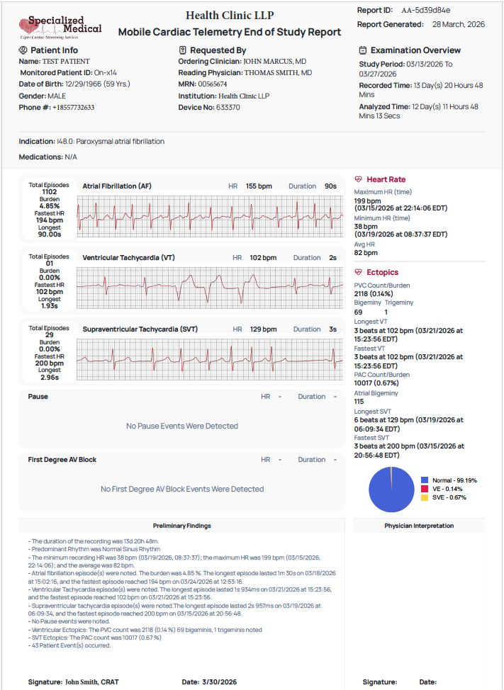
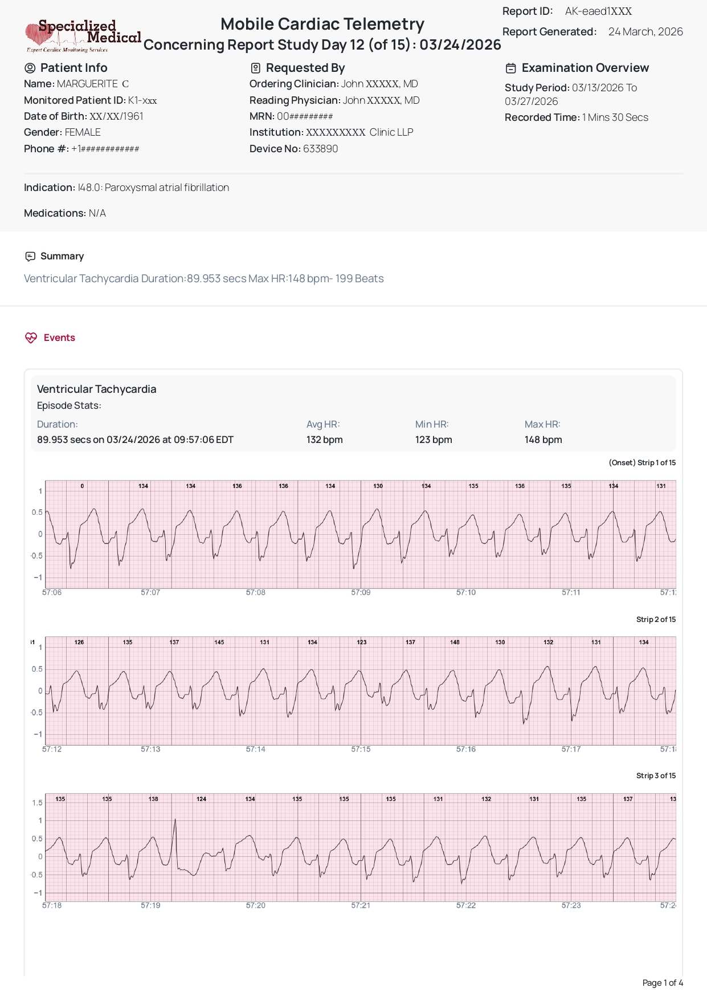
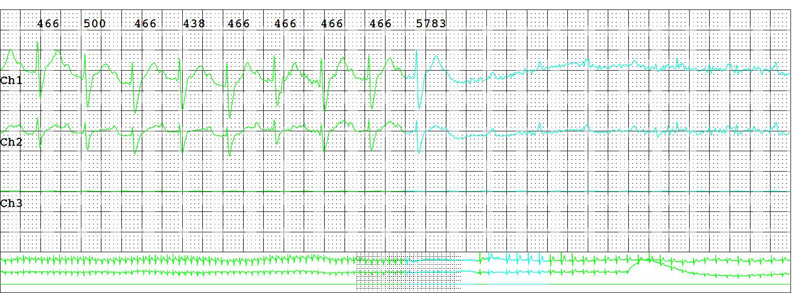
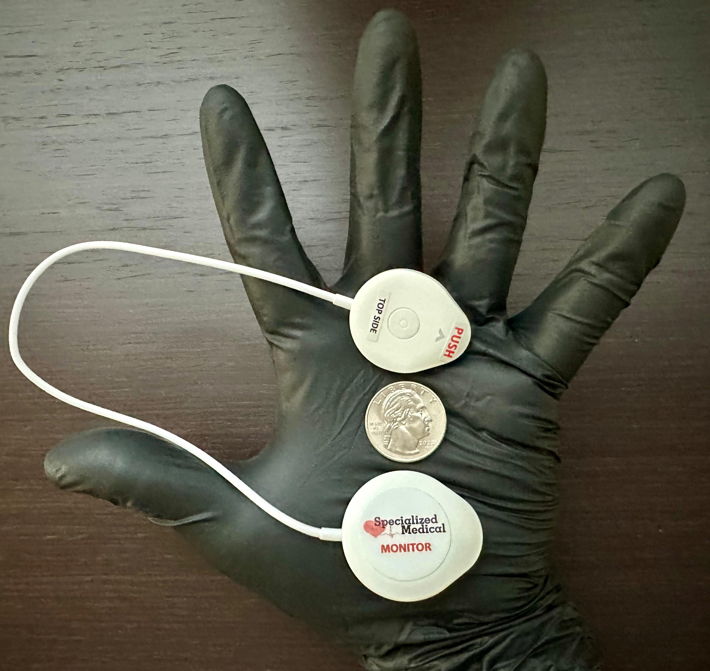

Our Services
Services Built For Modern Physician Practices
Live ECG data, streamlined workflow, and turnkey monitoring support.
Services Summary
One system, Muliple Monitoring Options.
Extended Holter
Extended Holter
Event Monitoring
MCT (Telemetry)
MCT (Telemetry)
Four test types,
one consistent workflow
Support Holter, Extended Holter, Event Monitoring, and Telemetry (MCT) through a turnkey monitoring program built around the S-Patch Monitoring System.


Live Streaming,
Real-Time Data
Our platform is designed for continuous, resilient real-time data streaming across a wide range of patient environments, including rural areas. This supports uninterrupted data capture, reduces the likelihood of incomplete studies, and gives physicians greater confidence in every test. Data is sent live to our monitoring center—no manual uploading, no data delays.
Monitoring Equipment options
The S-Patch Monitoring System
Primary Featured System. The S-Patch Monitoring System is Specialized Medical’s primary featured monitoring solution. It supports Holter, Extended Holter, Event Monitoring, and Telemetry (MCT) while delivering live-streaming, real-time ECG data through a compact, patient-friendly design.
Our platform is designed for continuous, resilient real-time data streaming across a wide range of patient environments, including rural areas. Data is sent live to our monitoring center—no manual uploading and no data delays.
- Primary featured system for Specialized Medical
- Supports Holter, Extended Holter, Event Monitoring, and Telemetry (MCT)
- Live-streaming, real-time ECG data
- No manual uploading


Lead-Wire
Monitoring System
Secondary / legacy monitoring option. Lead-Wire remains available as an older secondary monitoring option where appropriate. It is shown separately so practices understand it is not the primary system being promoted.
- Secondary option where needed
- Separate system from S-Patch
Streamlined Workflow
for Your Office
Your medical assistant completes a simple 3-step process: Enroll in Web Portal → Hook-Up → Disconnect (Under 15 Minutes)
Once the patient leaves, we take over the rest:
24/7 live monitoring across all test types
Real-time arrhythmia alerts by email, text, or phone call
Automatic generation and delivery of final reports
Patient support through our 24/7 multilingual call center
Practice Integration
Made Easy
- Final reports are EMR-ready and can be automatically pushed into your system
- Electronically review, interpret, date, and sign final reports
- Customized billing templates with all CPT and ICD-10 codes provided
- We work directly with your billing staff or third-party biller for seamless claims submission
- Our portal tracks device usage and alerts your staff about any inactive or unreturned monitors
Detailed Reporting That Supports Faster Clinical Decisions.
Symptomatic vs. Asymptomatic Clarity
Patient symptoms are entered digitally during the test and automatically populate on the final report above the corresponding ECG strips, making it immediately clear whether an event was symptomatic or asymptomatic - with no separate handwritten symptom diary required.
ECG strip detail
Experience industry-leading ECG clarity, including precise P-wave definition. Our reports provide the granular detail necessary for accurate rhythm interpretation.
EMR-Ready Final Reports
Stop wasting time with manual data entry. Final reports are EMR-ready and can be pushed automatically into your existing system for a seamless digital record.
Streamlined Physician Interpretation Workflow
We have simplified the professional review process to fit into your busy schedule. Through our secure provider portal, you can manage the entire interpretation cycle in one place:
- Electronic Review : Access comprehensive data and full-disclosure strips from any secure device.
- Professional Interpretation : Document your findings directly within the digital report interface.
- Digital Authentication : Finalize reports with an electronic signature, date, and time stamp—ready for billing and clinical filing.

Clinical Proof

patient-friendly design, small monitor size, comfort, and ease of wear.
Case Study 01 (S-Patch System)
Easy for Patients to Wear
"I wore the S-Patch Monitor from Specialized Medical all week. It was easy and hassle free. Was not a problem at all. The monitor I wore was very small. I didn't even realize I was wearing it. The technology is incredible. I'm looking forward to seeing the results, since I'm pretty sure I have occasional Afib. This monitor system is SO MUCH better than the old way!"
- R. Gall

Detected, reported, and escalated quickly
Case Study 02 (S-Patch)
The ER Missed It
“I am so grateful for Specialized Medical and the care I received during my heart monitoring. I wore the monitor for a 15-day test, and on day 12 it detected a serious rhythm issue that needed immediate attention. I truly believe that this monitoring made a life-saving difference for me. What stood out to me just as much as the technology was the people behind it. The customer service team at Specialized Medical was outstanding from beginning to end. They were kind, responsive, patient, and made me feel supported every step of the way.
The monitor itself was also much easier than I expected. It was simple to use, comfortable to wear, and easy to manage throughout the testing period. That gave me peace of mind and made it possible for me to go about my normal routine while still being monitored. I’m incredibly thankful that this issue was found when it was. Specialized Medical gave me not only answers, but confidence that someone was looking out for me”.
— Marguerite C.

Detected, reported, and escalated quickly
Case Study 03 (S-Patch)
The ER Missed It
“I am so thankful for Specialized Medical. I wore the monitor from March 4 to March 6, 2026, and it found a serious heart problem that I did not know was happening. I truly believe that test may have saved my life. What meant the most to me was how kind and helpful everyone was. The customer service was outstanding. Any time I had a question, someone was there to help me and explain things in a way I could understand. That made a scary situation feel a little easier. The monitor itself was also very easy to use. It was simple, comfortable to wear, and did not make my day harder. I was able to go about my normal routine while feeling better knowing my heart was being watched. I will always be grateful to Specialized Medical for finding something so important and for treating me with so much care and respect. I would recommend them to anyone who needs heart monitoring.”
— Rhonda B.

Detected, reported, and escalated quickly
Case Study 04 (Lead Wire System)
The ER Missed It
“I am a Family Medicine doctor located in Central New York and applied Specialized Medical’s Cardiac Holter Monitor to a 60-year-old male patient complaining of cardiac-related issues. The patient wore the Specialized Medical Cardiac Holter Monitor for 24 hours. During this test the Cardiac Monitor picked up 3 Paroxysmal AV blocks between 2:18 p.m. and 2:42 p.m. When Specialized Medical saw these results they immediately transmitted the reports to me and then called me on my cell phone. That day the doctor discussed the results with the patient and then referred him to a Cardiologist. We later found out the patient had been walking up a hill and after about 5 minutes into his walk he experienced the aforementioned cardiac arrhythmia. I highly recommend Specialized Medical for their cardiac monitoring services.”
- Michael

Example of the detail captured and reported by Specialized Medical.
Case Study 05 (Lead Wire System)
A Life-Saving Second Opinion
“I am an Internal Medicine doctor located in Brooklyn, NY and applied a Specialized Medical Cardiac Monitor to a female patient complaining of cardiac related issues. The patient wore a Cardiac Event Monitor and on the 5th day into the test at approximately 9:00 a.m., the patient experienced a cardiac episode that caused her to call me. I immediately had the patient go to hospital emergency room where I met her. I removed the monitor as they admitted her and sent the data into Specialized Medical. Shortly thereafter, I received a phone call on my cellular number that Specialized Medical found a significant cardiac arrhythmia. After reviewing the cardiac reports supplied by Specialized Medical, I called the hospital and forwarded the test results to the ‘Fellow Cardiologist’ who to my surprise was in the process of releasing my patient because they could not find anything wrong. When the cardiologist at the hospital received the test results they determined that the patient required immediate medical care and scheduled the necessary procedures to take place. If it was not for Specialized Medical’s technology and service I am not sure if this patient would be around today.”
- Dr. Catalina R.S.
See Live ECG &
Symptom Logging
Our platform streams ECG data in real-time, allowing physicians to monitor patients remotely with confidence. Patient symptoms are entered digitally and automatically populate on the final report, making it immediately clear whether an event was symptomatic or asymptomatic.
- Live ECG streaming for remote monitoring workflows
- Digital symptom logging tied to ECG events
- Clear symptomatic vs. asymptomatic labeling on the final report
Patient-Friendly
Design
Each monitor weighs less than four sheets of paper (0.6 oz), The monitor runs for a minimum of 10 days per battery, supporting longer monitoring periods with less interruption, is water-resistant (IP55), and offers industry-leading ECG clarity, including precise P-wave definition.

Ideal for TAVR Programs
Post-TAVR Monitoring, Built for Continuity
Patients recovering from TAVR remain at risk for delayed conduction abnormalities and other clinically significant rhythm changes, making reliable post-procedure monitoring essential. Our monitoring system combines the S-Patch ECG monitor with an adaptive, multi-path cellular transmission platform designed for continuous, real-time ECG streaming. The differentiator is not simply the monitor itself, but the resilient connectivity infrastructure behind it, which helps maintain transmission across changing environments, including rural and lower-coverage areas. This supports more consistent ECG data capture and faster awareness of actionable rhythm changes to inform timely clinical decision-making.
Start Your No-Risk
Beta Trial
See how Specialized Medical can support your practice with: live-streaming ECG data; simplified office workflow.
Evaluate Specialized Medical with a small, no-obligation beta trial. If it isn’t the right fit, we’ll take everything back—no hassle.